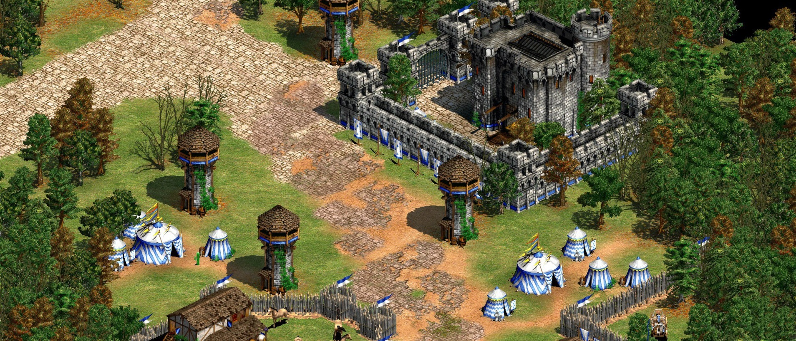

A fan page for my course project
Age of Empires II: The Age of Kings is a real-time strategy computer game set in the Middle Ages. It was released in 1999, and is the second main title of the Age of Empires series developed by Ensemble Studios and published by Microsoft.
The player has control over a society and guides them through four different time periods or "ages". The game begins in the Dark Age, where very few buildings and units are available. After a short time when requirements are met, the user gains the ability to advance their civilization beginning with the Feudal Age, where more upgrades, buildings, and units become available. The next age is the Castle Age, in which the powerful Castle may be built, and used to produce powerful units including the unique unit of each civilization. Finally, the user can reach the Imperial Age, which is reminiscent of the early years of the Renaissance. Once the user has reached the Imperial Age, they gain access to all the upgrades, units, and buildings that may be built and researched for their specific civilization.
It's name is there together with the other giants:
Starcraft, Quake, Diablo II and many more...
Reception of The Age of Kings was highly positive. The significant number of new features was praised, as were the gameplay improvements. The Age of Kings received "universal acclaim", according to video game review aggregator Metacritic. The game was a complete hit. Most of us can probably recall the time when we played it when we were little. Even now, even after 20 years the game remains alive with an active and dedicated community.
